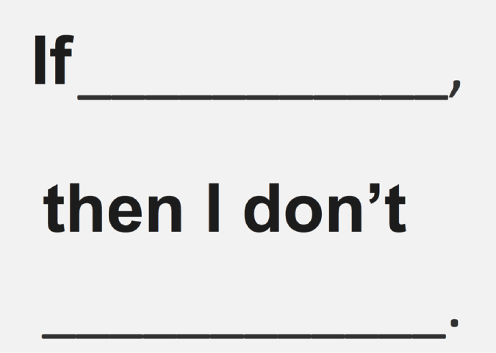

Chapter 7: How to follow through on EVERYTHING

How to finish what you start—by getting high
Do you finish everything you start?
Me neither.
We’re not the only ones. In fact, University of Scranton research suggests that just 8% of people achieve their New Year’s resolutions.
*Eight percent! *
In this chapter, you’ll become part of the 8% who follows through and achieves their goals.
You’ll learn:
- The surprising reason we lack follow-through.
- 11 different techniques to instantly strengthen your follow-through, so you can get more done, today.
- How to naturally increase your dopamine levels to help you feel better and skyrocket your follow-through.
Let’s get to it, shall we?
Why we don’t follow through
Follow through: the act of continuing a plan, project, scheme, or the like to its completion. (Note: as a noun, a hyphen is added: follow-through.)
There are two reasons why we don’t follow through. You either:
- Ran out of willpower, or
- Ran out of dopamine.
Let’s tackle each one in turn.
Is your willpower running low? Stop using it
As you’ve already learned, willpower is limited. When your “willpower tank” goes empty, you’re running on fumes—and give up.
Remember: it’s easier to conserve willpower than strengthen it. And the best way to conserve willpower is through routines. For example, I run three times a week. If it’s Monday, Wednesday, or Friday, I run. No question. It’s programmed into me—so much so, I’ll run even if it’s pouring rain. Why? Because it’s a habit—and habits don’t require willpower. It’s automatic.
That’s why only 8% of people achieve their New Year’s resolutions: they rely on willpower—rather than routine—to get the job done.
Remember: to boost your follow-through, use routines, not willpower.
Seek pleasure—and boost your dopamine
Sex is good, right? When you’re rolling around in the sheets, moaning and breathing hard—you’re in the moment.
You’re also high as a kite on dopamine.
Yep, dopamine—a neurotransmitter that controls your brain's reward and pleasure centers—is what makes you feel good. So if you’re a caffeine junkie, your brain floods with dopamine when you smell coffee. Or if you love sweets, your dopamine surges when—like me—you pass by Ben & Jerry’s ice cream in the supermarket.
Dopamine is powerful stuff. And increasingly, scientists are discovering that dopamine levels can help your follow-through. Research published in the journal Neuron shows that dopamine is essential to habit formation; without dopamine, forming new habits—and following through—becomes impossible. Another study—at the Brain and Behavior Discovery Institute at Georgia Health Sciences University—also found that dopamine is crucial for learning habits.
It’s interesting: higher dopamine levels may just be the difference between following through—and giving up.
Let’s review the three main points:
- Willpower is limited.
- Habits (or routines) don’t drain willpower; therefore, they are more effective for following through.
- To create habits, increase your dopamine levels.
So now let’s discuss...
How to naturally increase your dopamine levels so you feel better and follow through
Wanna get high on dopamine?
Then...
Pull the trigger. Shockingly, you can consciously increase your dopamine levels. Try it. Picture your hand is on a feel-good trigger, and by pressing the button you release a rush of dopamine. Feels good, doesn’t it? Now press it again :)
Make the act the reward. If you enjoy the act, it becomes a reward in itself. For example: while training for my 50K, I started running three times a week because I had to; after awhile, though, I simply ran because it made me feel good. That’s dopamine, homey!
Set deadlines daily—and hit them hard. It’s a fact: when you complete a task, your dopamine levels increase; when you don’t complete a task, your dopamine dries up. When you struggle to follow through, give yourself a deadline—whether it’s five minutes or five hours—and get it done.
This strategy works for two reasons: (i) deadlines improve your focus, and (ii) deadlines increase your dopamine levels. (That’s another reason we create SMART goals—the due date increases your focus and spikes your dopamine.)
Take shots of dopamine throughout the day. Have you seen What About Bob? (It’s hilarious.) In the movie, Bill Murray plays Bob, an anxious mess who can’t get do anything without freaking out. As a remedy, Bob’s psychiatrist tells Bob to break large goals into smaller, more manageable ones, a technique he refers to as “baby steps.” And you know what? “Baby steps” worked for Bob—and they’ll work for you, too.
Why? Because “baby steps” give you hits of dopamine throughout the day. You see, dopamine levels increase relative to the size of the achievement. (That’s why grown men cry when they win the Super Bowl—but not a preseason game.)
It’s funny how the brain works: you set one large goal for the day, like “go skydiving” and you’ll get one massive rush of dopamine. But you can also break that goal into “baby steps” and enjoy a small hit of dopamine throughout the day.
Instead of “go skydiving” you break the goal down into smaller goals. For example, “baby steps to the skydiving site” followed by “baby steps into a snazzy skydiving outfit” and “baby steps into the plane” all provide you with a bit of dopamine. Each “baby step” gives you a rush that keeps you high—and happy—throughout the day. Now let’s discuss another way to raise your dopamine levels, which is to...
Get pumped! Did you achieve your goal? THAT’S SUPER-MEGA-AWESOME-SAUCE-WITH-WHISKEY-DRIPPINGS. Go ahead: put on Eye of the Tiger. Start shadow-boxing. You deserve it.
Seriously, though, when you hit your goal—even if it’s something as small as feeding the cats—say to yourself, “I did it!” You’ll get a sweet dopamine rush.
OK, so now you understand dopamine: how it boosts your follow-through, and how to increase it. But at this point I’m guessing you either think:
- This is a load of positive, rah-rah crap. It’s not. Dopamine is critical for feeling good and developing good habits. This has been proven in clinical studies, which I’ve referenced throughout this chapter. And the methods to increase dopamine release have been proven, too.
- These are good ideas, but you won’t act on them. To overcome this, I want to you set a micro-goal right now to finish this paragraph. Once you’ve reached the end of this paragraph, congratulate yourself for finishing by saying, “I did it!” Are you ready? This is the end of the paragraph.
Say, “I did it!”
Feels good, right? Now set the intention to congratulate yourself when you finish this chapter. (Don’t worry; I’ll remind you.)
And now that you’ve boosted your dopamine, here are...
11 surprisingly simple methods to dramatically improve your follow-through
Method 1: Visualize success
Visualization: representing data as images to help visually understanding the meaning of the data.
Put reminders of your goals all over. This will constantly remind you what you really want—and boost your motivation to do it!
As you recall, your Board Game of Life contains pictures of everything you want to do—and you’ve moved the most important items to your kanban so you can make those goals happen.
You’ve also installed the Replace New Tab Page Chrome extension so your kanban displays automatically whenever you open a new tab.
Those are good starts; here are a few more ways to keep your goals in front of you.
Use Google Calendar—or any online calendar—to send you email reminders every day (or every few hours).
For example, let’s say your kanban includes a goal that says: “Earn $50,000 in monthly passive income.” You then create a reminder email that says, “What am I doing today to help create my passive income of $50,000 per month?”
Use the following email template:
“I really want to X. What am I doing now to achieve that?”
Trust me, getting those email reminders will help you visualize success on an ongoing basis.
You can also add reminders on your phone. A simple way to add a recurring reminder is with Wunderlist. Wunderlist is a free and popular tool that works on all major devices. Create a To-Do and set it as a recurring reminder so that you’re always reminded to work on your most important task. Here’s a support article explaining how to set up reminders with Wunderlist.
Other ways to visualize your success:
- Write it down—preferably on your walls, like Jack Nicholson in The Shining.
- Wear a silly-looking wristband, like those LIVESTRONG guys.
- Buy inspirational posters.
- Write your goals on Post-It notes; put them around the house, on your steering wheel, your face, etc.
- Write your goals on a whiteboard.
Does visualization work? Uh, yeah. It does.
Muhammad Ali pictured winning the fight before he entered the ring…
Michael Jordan envisioned making the game-winning shot before the play even started… and…
Jim Carrey wrote himself a check for $10 million—when he was dead-broke—and went on to earn $20-million per film.
Here’s another one: Arnold Schwarzenegger got bored after winning the Mr. Olympia bodybuilding contest six years in a row. (Talk about an underachiever.) So he visualized getting paid $1 million per film, writing a bestseller, owning his own business, and having sex with a Kennedy.
As he described in his appropriately-titled book Arnold, “In two or three years, I had been able to change my body entirely. That told me something. If I had been able to change my body that much, I could also, through the same discipline and determination, change anything else I wanted. I could change my habits, my whole outlook on life.”
A word of warning: mere visualization is not enough. It may, in fact, be harmful. A study at the University of California, Los Angeles met with students 5–7 days before an exam. During this time, students were asked to visualize either:
- getting a good grade,
- studying, or
- both.
Interestingly, those who visualized getting a good grade (the outcome) got the lowest grades. The group who visualized studying (the process to achieve the outcome) got better grades and reported lower stress levels.
As you can see in the above example, it’s important to visualize what you want and how you’ll get there. Because as author Joel Barker eloquently put it: “Vision without action is a dream. Action without vision is simply passing the time. Action with vision is making a positive difference.”
OK, you’ve learned to visualize future success. Now let’s look at how to cover your back-side with...
Method 2: The secret tactic used by the world’s greatest general to ensure follow-through
Napoleon knew the secret to follow-through.
Once his soldiers crossed a bridge, he commanded…
“Burn the bridge!”
In doing so, Napoleon removed all doubt from his soldiers’ minds; they couldn’t retreat; moving forward was their only option.
You can do the same. The next time you’re faced with a difficult task, remove the option to retreat. Burn the bridges.
For example, let’s say you and your friends want to go to Mardi Gras. Everyone’s excited, but no one’s booked their flights. To ensure follow-through, get your friends to pool their money first and then buy non-refundable plane tickets. Since they’re invested—and stand to lose that money by bailing out—they’re more likely to go.
Another example: let’s say you’re training for a marathon. Rather than start running from your house, run a loop trail. Since it’s a loop, it’s harder for you to just turn around. (Kinda like the astronauts on Apollo 13; they had to go around the moon in order to come back to Earth.)
Method 3: Win the war; skip the battles
As we’ve seen, willpower is finite; use your willpower to win the war, not just a battle.
For example, let’s say you want to cut down on drinking. Each time you turn down a drink, you win a battle. But each battle reduces your willpower further. Until, finally, you cave in—and lose the war.
So instead of fighting battles, win the war: stop buying beer. That way you only have to make one decision—instead of dozens.
Consider the following two:
- Win the war: “I’m not going to buy beer.”
- Win the battle: “I’m not going to open that delicious Guinness in my fridge… I’m still not going to open that delicious Guinness… still not… oh what the hell it’s just one…three… seven...
.”
Want to cut down on TV? Cancel your cable plan. Too much Facebook? Delete your account. Texting while driving? Store your phone in the trunk.
All these require only one decision—which will save you thousands of decisions going forward.
It works for cultivating good habits, too. For example, do you want to increase your savings? Instead of reminding yourself to put away money every month—which drains your willpower—set up an automatic savings plan. You can do this easily online with your bank. Make sure the money transfers into an account that you can’t access easily; in other words, don’t get a debit or credit card for that account. Make it hard to get to—otherwise, you may still lose the war!
Method 4: Raise the stakes—and improve your chance of success by up to 3x
Mention your goal publicly—and make it hurt if you don’t follow through.
For example: offer to donate money to an organization you loathe if you don’t follow through.
StickK can help with this. You add money to your account, and state your goal. If you don’t achieve your goal by your intended date, your money is automatically taken from your account. According to StickK, adding financial stakes increases your chances of success by up to three times. Not bad, eh?
Method 5: The “Pull the trigger” technique
You know the feeling: when you have a great idea that will change your life for the better—and you stash it away, never to be seen again.
Don’t let this happen! Act on it. Immediately, if it takes five minutes or less; if it takes longer, schedule a time to do it.
For example, I’m lousy at emailing friends. So now when the thought strikes me, I email them right away. Otherwise, it’d be a frigid day in Hades before I get around to it.
Method 6: The Woody Allen technique
Woody Allen famously said, “80 percent of success is showing up.” It’s the same with following through: Don’t worry about finishing; just show up.
For example, when I don’t feel like writing, I tell myself “I’ll write for one minute.” That’s it. Often, I’ll end up writing for 20 minutes or longer.
Same thing with exercising. Don’t worry about doing a 90-minute routine. Just put your workout clothes on and walk around the house. Chances are, you’ll shame yourself into working out.
Method 7: Stack your benefits
Here’s another way to follow through: next time you’re feeling lazy, picture the benefits of following through. For example, picture—as specifically as possible—how clear-headed, well-rested, and productive you’ll feel once you finish your task.
Then imagine what will happen if you don’t complete the task: how guilty you’ll feel, how you’re letting someone down, or how the work will just pile up, making it harder for you to get ahead.
By stacking your benefits, you have a clear image of why you should follow through. With these images in mind, use the Woody Allen technique to show up—and start seeing progress right away.
Method 8: The 5x method
This works great for overcoming bad habits. Instead of saying “I’ll just have one” force yourself to say “I’ll have five—or nothing.”
Cigarettes are a great example. Instead of saying “I’ll just have one cigarette” say “I’ll either smoke five cigarettes, back-to-back, or none at all.” More often than not, you won’t smoke any because five feels like overkill.
See how the 5x method works? It’s pretty sneaky. You aren’t saying “I can’t smoke” (because “I can’t” is lousy for following through). Instead, have a choice which allows you to assert your autonomy and decide which option is right for you. Plus, you’ve “stacked the deck” and made not smoking seem easier than smoking five cigarettes. Powerful stuff.
Method 9: The progress bar
Use a progress bar to track your, um, progress. This visualization helps you stay motivated because you see progress. Fundraisers use the “temperature” gauge—that measures how much money they’ve currently raised—to convince people to contribute more and hit the goal.
Your kanban is the perfect progress bar. As you complete tasks, move them to the “Done” column—and marvel at your progress. I’m telling you, the kinesthetic thrill of moving items to the “Done” column never gets old—especially when it’s positively impacting your life!
Method 10: The “Before That” technique
When tempted to do something, say “OK, I’ll do X… but before that, I’ll do Y.” Often, your craving will disappear by the time you get back.
For example, I decided to cut back on the booze. When I had a craving for a beer—or single malt Scotch—I would think to myself “Sure, I’ll have a beer—but first I’ll go for a short walk.” If I still wanted a beer when I got back, I had one. But more often than not, I forgot all about it.
Method 11: Use if-then planning to increase commitment by up to 113%
If-then planning has been proven to increase a person's likelihood to maintain a routine by 133%.
We’ll look at the proof in a second; but first, here’s how if-then planning works:
Take whatever behavior you want to achieve and attach a contingency to it.
“If _, then _.”
For example: “If it is Monday, Wednesday, or Friday, then I will run for 30 minutes.”
This is the exact process I used to run my first 50k (31 miles). I created a spreadsheet that included the distances I would run on every Monday, Wednesday, and Friday. Then, I reminded myself that, “If it is Monday, Wednesday, or Friday, then I will complete my running workout as described in my spreadsheet.” The simple process allowed me to train effectively for over five months and run my first 50k, training only three days a week. Routine for the win!
And it’s not just me.
In Succeed: How We Can Reach Our Goals, Dr. Heidi Grant Halvorson described a study focused on if-then planning. In the study, participants were asked to plan where and when they were going to exercise. For example, “if it's Monday, Wednesday, or Friday, then I will go for a run in my neighborhood.”
The results? Several months later, 91% of the if-then planners continued to exercise, compared to only 39% of the control group—a 133% increase.
And it ain’t just exercise...
Another study by the University of Konstanz wanted to see how if-then planning affected students’ behavior. In the experiment, students were given either simple goal intentions (“I will ignore distractions!”) or an if-then construct (“If a distraction comes up, then I will ignore it!”).
The findings were impressive. As you probably guessed, students using the if-then construct had improved task shielding (i.e. they weren’t distracted), faster response times in an ongoing categorization task and shorter periods of looking at distractions. This held true regardless of the children's temperament and language competency. Students who just used the simple goal intentions (“I will ignore distractions!”) saw no improvement whatsoever.
It's worth repeating that students who used if-then planning got distracted less frequently—and for shorter periods of time—than students who didn’t use if-then planning.
So we’ve seen that if-then planning works. But why? There are two reasons. The first reason is that our brains are hardwired for contingencies, such as “If an ape hurls poop at me, then duck.” That’s how we learn and develop our thinking—so it makes sense to use this language to alter our behavior. The second reason is that if-then planning creates a link in your brain between your trigger (the “if”) and your action (the “then”).
Now, write down your goals using if-then statements. Here’s a snazzy-looking table to get you started:
| If | [enter contingency for behavior or routine] | , then | [enter behavior or routine] |
|---|---|---|---|
| If | I’ve had four beers today | , then | I will not drink anymore today. |
| If | it’s between 8am-5pm | , then | I won’t check Facebook. |
| If | it’s Saturday | , then | I will call my parents. |
| If | it’s 6 a.m. | , then | I will write for 90 minutes. |
| If | a monkey hurls poop at me | , then | I will duck. |
Remember the study about how saying “I don’t” is 64% more effective than saying “I can’t”? Take advantage of both: combine “I don’t” with an if-then construct for maximum effect.
So, for example:
- If it’s a weekday, then I don’t eat unhealthy snacks
- If I’m working, then I don’t work past 5 p.m.
- If it is glue, then I don’t sniff it
- If people are talking about someone behind their back, then I don’t contribute to the conversation
Print and fill in this nifty “If_, then I don’t ____.” reminder and hang it somewhere visible.
Remember, you can get this resource (and countless others) on the Resources page.
If you’ve read this section, then you understand the power of if-then planning...
If you want to develop a routine and achieve your goals, then use if-then planning for each routine...
And if you want to improve your follow-through, then apply the 11 methods we’ve covered in this chapter.
Followed through? Do this next
As we discussed, you want a dopamine rush for following through. So for each task you finish in your kanban:
- Congratulate yourself on a job well done. (I know this sounds cheesy, but it’s proven to work. So tell yourself “I did it!” whenever you follow through by finishing a chapter.)
- Move the item from your kanban to your “Done” column. This makes you aware—both visually and kinesthetically—of your accomplishment.
Summary
In this chapter, you learned that willpower is limited—and since habits don’t drain willpower, they are more effective for following through.
You also learned about dopamine’s importance to forming new habits, and that you can naturally increase your dopamine levels by following through and congratulating yourself on a job well done.
You also learned 11 different methods for following through, which you can use the next time you procrastinate.
Those 11 methods are:
- Visualize success: Put reminders of your goals all over.
- Burn the bridges: Make it impossible to turn back.
- Win the war; skip the battles: Make one decision that solves the problem, instead of ten little ones.
- Raise the stakes: Mention your goal publicly—and make it hurt if you don’t follow through.
- The “Pull the trigger” technique: If you have a great idea, act on it. Now.
- The Woody Allen technique: Just show up, and see what happens.
- Stack your benefits: Visualize the benefits of following through.
- The “5x” method: This works great for overcoming bad habits. Instead of saying “I’ll just have one” force yourself to say “I’ll just have five.” It’s either five—or nothing.
- The progress bar: Track your progress, visually. Your kanban works well for this.
- The “Before That” technique: When tempted to do something, say “OK, I’ll do X… but before that, I’ll do Y.” Often, your craving will disappear by the time you get back.
- If-then planning: Take whatever behavior you want to achieve and attach a contingency to it. For example: “If it is Monday, Wednesday, or Friday, then I will run for 30 minutes.”
What you need to do next
- Use the 11 techniques to improve your follow-through.
- Congratulate yourself when you follow through—and enjoy the dopamine rush!